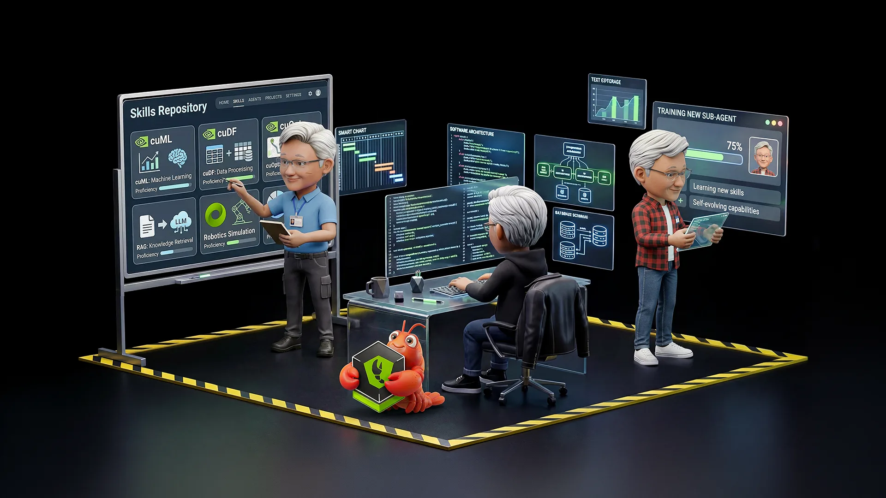
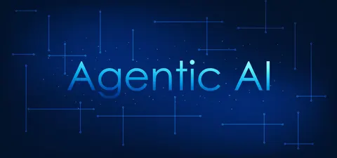

Cut feature cycle time from spec to production by at least 40%
Shipping Code 2× Faster with Spec-Driven, Agentic AI Development
MKS designed and rolled out a spec-driven, agentic AI delivery model that cuts feature cycle time in half - automating QA, code review, and task decomposition while keeping engineers firmly in control.
Overview
Engineering leaders at mid-market and enterprise organisations face a persistent delivery squeeze: product roadmaps expand faster than hiring, review bandwidth, and QA cycles can scale. Requirements get lost in translation between product, engineering, and QA. Developers spend more time interpreting ambiguous tickets than writing code - and traditional AI coding tools help at the keystroke level but don't close the loop between specification, implementation, and verification.
MKS designed and deployed a coordinated set of AI agents across the software delivery lifecycle - covering planning, development, QA, and code review - anchored to a single structured specification, so features move from spec to production roughly twice as fast.
Industry
Cross-Industry
Service Line
Agentic AI Development
Duration
12-Week Rollout
Delivery
Global Engineering Teams
The Challenge
Delivery friction persisted across every stage - from requirements to release
- Requirements were frequently ambiguous or incomplete, causing rework cycles that eroded sprint velocity
- Developers spent a disproportionate share of their time interpreting vague tickets rather than building features
- Code reviews bottlenecked on a handful of senior engineers, delaying merges and slowing the release cadence
- Test coverage consistently trailed behind each release cycle, creating quality risk that teams had limited capacity to address
- AI coding assistants helped with individual keystrokes but did not understand intent, enforce standards, or connect specification to output
- Post-release defects repeatedly traced back to the same upstream gaps - ambiguous acceptance criteria and missed edge cases

Despite growing AI tool adoption, engineering teams continued to lose time at the seams between product, development, and QA. The root cause was not individual productivity but systemic delivery debt accumulating at every handoff.
The Objective
Transform delivery by making the specification the source of truth across the entire SDLC
The client's goal was to measurably increase engineering throughput without simply adding headcount - by making AI do the mechanical work across planning, development, QA, and review, while keeping human engineers in control of judgement, architecture, and sign-off.
Automate test generation tied directly to acceptance criteria
Reduce first-pass code review burden on senior engineers
Eliminate rework caused by ambiguous or incomplete requirements
Build a governance framework for safe, auditable agentic delivery
Scale senior engineer leverage without proportional headcount growth
The Solution
A coordinated agent layer across planning, development, QA, and code review - anchored to a structured specification
- A planning agent decomposes each spec into an ordered task list, flags ambiguities, and drafts acceptance criteria for human sign-off - eliminating the "it wasn't in the ticket" class of defects at the source
- A coding agent scaffolds modules and implements against the spec, then self-checks its output before opening a pull request - shifting developers from typing boilerplate to directing intent
- A QA agent reads each acceptance criterion and auto-generates matching unit, integration, and negative-path test suites, plus synthetic test data where applicable - making coverage a by-product of specification
- A review agent performs the first-pass code review on every PR, checking coding standards, security anti-patterns, test coverage, and spec alignment - so human reviewers focus on judgement calls, not mechanics
- Post-deploy telemetry and defect reports feed back into the spec library, so agents learn from each release rather than teams re-learning the same lessons
- MKS provided the full governance layer: prompt libraries, evaluation harnesses, and audit trails to make agentic delivery safe, traceable, and production-grade

MKS designed and rolled out a spec-driven agentic delivery model that treats the specification - not the ticket - as the source of truth. Every feature begins as a structured spec capturing intent, acceptance criteria, interfaces, and constraints. From that single artefact, a coordinated set of AI agents handles the mechanical work across the SDLC - while human engineers retain full ownership of architectural decisions, spec approval, and final sign-off.
The Impact
Faster delivery, fewer defects, and a step-change in how engineering teams use their most experienced people
The 12-week rollout delivered measurable improvements across every stage of the delivery lifecycle - from requirements fidelity through to release frequency.
2X
Faster feature delivery - cycle time from spec to production cut roughly in half
60-70%
Reduction in QA effort through auto-generated tests tied to acceptance criteria
40%
Faster code reviews - first-pass agent review clears style, security, and spec issues before humans look
Rework
Dramatic drop in rework caused by ambiguous or missing requirements
Leverage
Senior engineers freed to focus on architecture, trade-offs, and team mentoring
Auditable
Every agentic action traceable with governance framework and evaluation harnesses in place